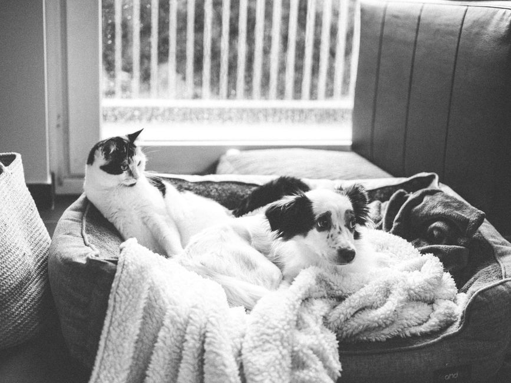

Cómo limpiar eficazmente la cama y el espacio de descanso de tu perro

Photo: Ricardo Oliveira / Pexels
Limpiar la cama y el espacio de descanso de tu perro mantiene el bienestar y la salud. Un lugar limpio reduce las irritaciones de la piel, las bacterias y los olores. Si tu perro duerme en una caseta, los mismos pasos sirven.
1. Decide cuánto limpiar
Una limpieza rápida se puede hacer cada día: sacude la ropa de cama y retira el pelo suelto y los restos. Una limpieza a fondo, con lavado y, si hace falta, desinfección, suele bastar una vez por semana.
2. Retira pelo y restos
Aspira la cama, el suelo de alrededor y cualquier tela con un cepillo suave. Sacude las mantas al aire libre.
3. Lava la ropa de cama
Sigue la etiqueta de cuidado. Lava la ropa de cama cada semana en agua tibia o caliente con un detergente sin perfume, añade un aclarado extra para que no quede jabón y sécala por completo antes de devolvérsela a tu perro. Una cama húmeda atrae moho y mal olor.
4. Limpia las superficies duras
Pasa un paño con agua y jabón suave por las superficies de plástico, madera o metal. Usa un desinfectante solo cuando haga falta, elige uno indicado como seguro para mascotas, sigue la etiqueta, enjuaga y deja secar por completo. No mezcles nunca lejía con amoníaco ni con otros productos, y evita los productos muy perfumados o con aceites esenciales, que pueden irritar o intoxicar a las mascotas.
5. Deja secar y ventilar
Deja que el espacio se ventile hasta que esté completamente seco y no quede olor a producto antes de que tu perro vuelva.
6. Ten una cama de repuesto
Una segunda cama te permite lavar una mientras la otra está en uso. No hace falta cambiar a menudo de producto de limpieza: elige uno suave y sin perfume y sigue con él.
7. Elige ropa de cama fácil de cuidar
Una cama lavable en lavadora y que se seque bien hace la rutina más sencilla. Sustituye las camas rotas, aplastadas o roídas, porque se pueden tragar trozos de relleno.
Revisa también a tu perro
Al limpiar, mira si hay puntitos negros (excrementos de pulga), caída de pelo o manchas en la ropa de cama. Si tu perro se rasca mucho o tiene la piel roja o irritada, acude al veterinario.